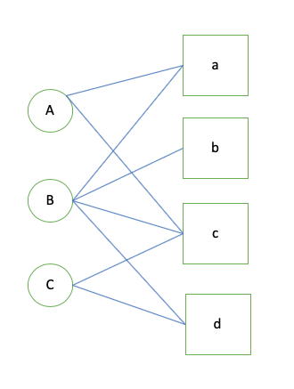
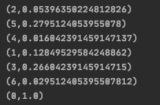

推荐系统需要根据用户的历史行为和兴趣来预测用户将来的行为和兴趣，然而对于很多在开始阶段就希望有个性化推荐应用的网站来说，如何在没有大量用户数据的情况下设计个性化推荐系统并且让用户对网站内容从而愿意继续使用推荐系统就是冷启动问题。
冷启动问题
冷启动问题可以分为以下三类:
用户冷启动 用户冷启动主要解决如何给新用户做个性化推荐
物品冷启动 物品冷启动主要解决如何将新物品推荐给可能对其感兴趣的用户
系统冷启动 系统冷启动主要解决在一个新开发的网站上(没有用户，也没有用户行为)设计个性化推荐系统，从而在网站发布时就让用户体验到个性化服务。
针对每一类问题可以有不同的处理方式，比如利用用户注册信息(已知的用户特征)，预测具有某种特征的用户是否喜欢某个商品。但是在实际的应用中，获取的用户注册信息比较少，从用户体验角度出发，一般不会强制用户填写较多的注册信息。这种信息的获取可以依靠第三方的合作来解决，比如facebook广告等。利用商品的内容信息对新物品做有效的个性化推荐。常见的模型有话题模型LDA(Latent Dirichlet Allocation)。
PageRank算法背景
PageRank,即网页排名，又称网页级别、Google左侧排名或佩奇排名。是Google创始人拉里·佩奇和谢尔盖·布林于1997年构建早期的搜索系统原型时提出的链接分析算法，自从Google在商业上获得空前的成功后，该算法也成为其他搜索引擎和学术界十分关注的计算模型。目前很多重要的链接分析算法都是在PageRank算法基础上衍生出来的。PageRank是Google用于用来标识网页的等级/重要性的一种方法，是Google用来衡量一个网站的好坏的唯一标准。在揉合了诸如Title标识和Keywords标识等所有其它因素之后，Google通过PageRank来调整结果，使那些更具“等级/重要性”的网页在搜索结果中另网站排名获得提升，从而提高搜索结果的相关性和质量。其级别从0到10级，10级为满分。PR值越高说明该网页越受欢迎（越重要）。例如：一个PR值为1的网站表明这个网站不太具有流行度，而PR值为7到10则表明这个网站非常受欢迎(或者说极其重要)。
基于PageRank的图模型
用户的行为可以用一个二分图模型\(G(V,E)\)来表示，其中顶点\(V=V_U \cup V_I\) 是由用户顶点和物品顶点组成, 图中的每一条边\(e(v_u, v_i)\) 代表了用户u对商品i产生了行为。对于pageRank算法来说，越是重要的顶点，其PR值越高。在用户行为二分图中，给用户u推荐物品的任务可以转化为度量用户顶点和物品顶点在图上的相关性。相关性越高的物品在推荐列表中权重越大。
度量图中两个顶点之间的相关性有很多方法，但一般来说图中顶点的相关性主要取决于以下三个方面：
- 两个顶点之间的路径数
- 两个顶点之间的路径长度
- 两个顶点之间的路径经过的顶点
而相关性高的的一对顶点具有如下性质：
- 两个定点之间有很多路径相连
- 连接两个顶点之间的路径长度都比较短
- 连接两个顶点之间的路径不会经过出度比较大的顶点
基于pagerank的思想，我们会确定一个概率\(\alpha\)决定会继续游走, 即以\(1-\alpha\)的概率留在当前节点。经过很多次的随机游走，每个顶点的PR值会收敛到一个数。所以我们会得到下面的公式
\[ PR(v) = \begin{cases} \alpha\sum_{v‘ \in in(v)} \frac{PR(v')}{\left| out(v') \right|}, & \text{v notEqual v'} \\[2ex] (1 - \alpha) + \alpha\sum_{v' \in in(v)}\frac{PR(v')}{\left| out(v') \right|}, & \text{ (v = v') } \end{cases} \]

我们以图中的例子来说明，用户\(A, B, C\)和商品\(a, b, c, d\) 分别编号\(0,1,2,3,4,5,6\) 执行代码如下
1 | /** |
最后输出结果 
用户a没有和物品b和d有过联系，但是b的PR值小于d, 所以针对A的推荐结果应该是{d, b}, 注意以上代码仅是从某个特定点出发。
GraphX的pagerank
图本身是递归数据结构，顶点的属性依赖于它们邻居的属性，这些邻居的属性又依赖于自己邻居的属性。所以许多重要的图算法都是迭代的重新计算每个顶点的属性，直到满足某个确定的条件。 一系列的graph-parallel抽象已经被提出来用来表达这些迭代算法。GraphX公开了一个类似Pregel的操作，它是广泛使用的Pregel和GraphLab抽象的一个融合。
在GraphX中，更高级的Pregel操作是一个约束到图拓扑的批量同步（bulk-synchronous）并行消息抽象。Pregel操作者执行一系列的超级步骤（super steps），在这些步骤中，顶点从 之前的超级步骤中接收进入(inbound)消息的总和，为顶点属性计算一个新的值，然后在以后的超级步骤中发送消息到邻居顶点。不像Pregel而更像GraphLab，消息作为一个边三元组的函数被并行 计算，消息计算既访问了源顶点特征也访问了目的顶点特征。在超级步中，没有收到消息的顶点被跳过。当没有消息遗留时，Pregel操作停止迭代并返回最终的图。
GraphX已经内置了pageRank算法 1
2val graph = GraphLoader.edgeListFile(spark.sparkContext, GRAPH_EDGE)
val ranks = graph.pageRank(0.1).vertices.map(x => x._1.toString + "," + x._2.toString)
小结
- 基于pageRank算法可以针对用户进行个性化推荐，也可以利用物品PR值排序结果作为冷启动推荐结果